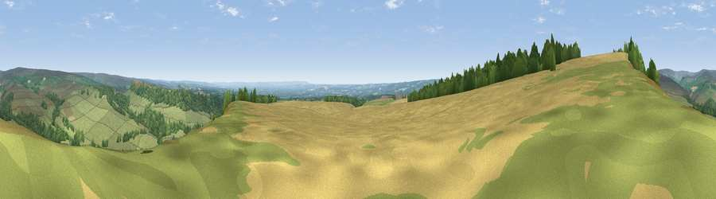

Viewpoint near Pockley
#4591 in England · top 13% of its area beats it · near Pockley · access?Where it is
The exact computed spot (SE 64100 90150). Click the marker for map links.
Public access: no public right of way or access land is recorded at this exact spot — it may be on private land. Computed from Natural England's CRoW access layer and OpenStreetMap rights of way — not the legal definitive map. Always verify locally.
The view, rendered

A 360° render of this exact spot computed from the terrain model, tree cover and land cover — summer colours, afternoon light, calibrated against photographs of famous viewpoints. Real trees, hedges and buildings will differ in detail.
The panorama
Grey silhouette: terrain skyline in each direction (720 bearings, Earth curvature and refraction included). Dashed green: skyline with trees (+15 m) and buildings (+8 m) as obstacles. Blue strip: how far the ground is visible on each bearing.
Where the view opens
Wedge length = distance to the farthest visible ground on that bearing (vegetation-aware). Rings at 10, 25 and 50 km.
What fills the view
49% grassland · 35% woodland · 17% cropland
Angular shares of the visible panorama (visual magnitude), not map area. Landscape diversity 0.45 (0–1 Shannon).
Key numbers
More beautiful places nearby
The staircase of upgrades: each row has a higher view potential than everything closer. Driving times are estimates from straight-line distance, calibrated against real road routing — check an actual route before setting out.
| Place | Direction | Drive | Score |
|---|---|---|---|
| Viewpoint near Carlton | WNW · 1 km | ~4 min | 71.6 |
| Viewpoint near Gillamoor | ENE · 2 km | ~6 min | 72.8 |
| Viewpoint near Ampleforth | SSW · 12 km | ~22 min | 76.6 |
| Viewpoint near Boltby | WSW · 14 km | ~26 min | 79.6 |
| Viewpoint near Thirlby | WSW · 15 km | ~26 min | 81.2 |
| Viewpoint near Thirlby | WSW · 15 km | ~27 min | 81.5 |
| White Hill | NNW · 15 km | ~28 min | 84.2 |
| Viewpoint near Great Broughton | NNW · 16 km | ~28 min | 84.4 |
54.30294, -1.01646 · source: screening · position refined by local search. Computed location — check access rights before visiting.